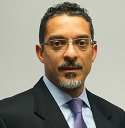
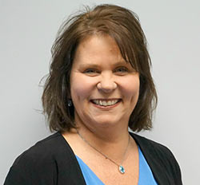

- HOME
- COMPANY
- SERVICES
- SERVICES
- Aerospace
- Electronics
- Armored Vehicles
- Naval
- CONTACT
NORCATEC LLC
100 Garden City Plaza
Garden City, NY 11530
Tel: 516-222-7070
Fax: 516-222-8811
email
©NorcaTec LLC. All rights reserved
Design: Inguna Trepsa


President and Chief Executive Officer
NorcaTec LLC
Sam Gorman joined NorcaTec as President and CEO in 2015 bringing along 20 years of experience in the aerospace and defense aftermarket services and manufacturing sectors. He is responsible for NorcaTec’s overall business operations, strategic capability development, regional geographic expansion, and customer portfolio growth.
Prior to this appointment, he was the General Manager of AAR Corp’s Defense, Systems and Logistics - Government Programs organization with worldwide operations. His prior assignment at AAR was Vice President and General Manager of the Aircraft Component Services business in New York and Amsterdam.
Prior to AAR, Sam worked at SR Technics Switzerland in Zurich as Executive Vice President of Component Services, Honeywell Aerospace as Managing Director for MRO in Germany and the Czech Republic, and held several management positions at United Technologies Corp., Pratt and Whitney in Dallas, Connecticut, and Singapore.
Sam earned a Master of Business Administration, Bachelor of Economics, and Bachelor of German Language and Literature from the University of Michigan, Ann Arbor. He also studied abroad as part of his master’s degree at Erasmus University’s Rotterdam School of Management. Sam holds Lean Master and Six Sigma Green Belt certifications from Honeywell.
Senior Executive Vice President –
Land and Naval Systems
NorcaTec LLC
Allen Rosen has been with NorcaTec since 1984, beginning his career supporting the armored vehicle division before and while attending college. Since joining, he has held several positions of increasing responsibility as the business expanded into aerospace and other new geographic markets with new product lines. He leads a team of specialized Project Managers and Sales Managers. In his current capacity, Allen is responsible for business development and program management of the Land Systems and Naval Systems Business Units profit and loss centers in New York and Minnesota.
Allen earned a bachelor’s degree from Hobart Liberal Arts College in Geneva, New York.
Executive Vice President –
Sales, Marketing and Business Development
NorcaTec LLC
Tom Duncan joined NorcaTec as Executive Vice President of Sales, Marketing and Business Development bringing NorcaTec a wealth of experience from his extraordinary career of 35 years in the aerospace and defense industry serving international markets.
Prior to this assignment, Tom was on the executive leadership team at M International. He began his aviation career with Sikorsky in Stratford, Connecticut, working in aftermarket Program Management. Afterwards, he joined Lycoming Engines in Stratford which was later purchased by Honeywell Aerospace. This led to a 25-year tenure with Honeywell in various roles of increasing responsibility with specialization in global defense markets, rotary-wing platforms, military fixed-wing aircraft and customer relations.
Tom holds a Bachelor of Science from Southern Connecticut State University and a Six Sigma Green Belt certification from Honeywell.
Director International Sales –
Eltronics Division
NorcaTec LLC
Matthew London joined NorcaTec as Director of International Sales for the Eltronics Division in 1995 and has been in the electronic component distribution sector for over 25 years. He succeeded his father as Director in 2017 who was running the business since 1992. Matthew has full responsibility for NorcaTec’s electronics components sales and distribution business.
Prior to his career in the commercial and military electronics industry segment, Matthew was a Public Accountant and later a Budget and Strategic Planning Analyst for a Fortune 500 company.
Matthew has a CPA and a B.S. in Accounting from Syracuse University.
Vice President of Aerospace Programs
NorcaTec LLC
Swamy Del Rio joined NorcaTec as Program Manager for our OEM Distribution Programs in 2016. He is responsible for managing and developing our two OEM distribution programs and he and his team are focused on maintaining a sustainable and reliable aftermarket support for customers around the globe. He is responsible for managing and growing all our aerospace distribution, sales and trading programs.
Prior to this assignment, Swamy spent 11 years at AAR in the commercial and defense component MRO business. He started out as an A&P mechanic, then as an analyst and eventually managing the business development department.
Swamy earned a Master of Business Administration from Baruch Zicklin School of Business in NYC and a Bachelor of Business Administration from Queens College. He also holds FAA A&P certifications.

Vice President of Government Programs
NorcaTec LLC
Kathy Bonner joined NorcaTec as the Program Manager for Small Business and Government Programs in 2017 bringing along a wealth of experience in the airline component repair business. Her responsibilities include sourcing SBSA solicitations and working with our channel partner, AAR Corp., for pricing and delivery, expediting orders, maintaining contractual obligations and working with our Brooklyn Park Production & Quality teams to assure product compliance.
Prior to this assignment, Kathy was a Customer Support Account Manager at AAR for 30 years. Her customer service background has been key in winning government contracts. Her drive and dedication to support the troops and assure on-time-delivery has been instrumental in our small business success.
Kathy enjoys spending summer vacations in Montauk and Cape Cod with her two children.
Vice President of Business Development
NorcaTec LLC
Terence Cusick serves as Vice President of Business Development at NorcaTec, bringing three decades of leadership experience in defense contracting, supply chain management, and international military logistics. With a strong background in federal acquisition and a keen understanding of the Defense Logistics Agency’s procurement environment, Terence drives strategic growth by identifying key opportunities across a U.S. and allied military customer base. His expertise in managing complex supply programs ensures mission readiness for some of the most demanding vehicle fleets in the world.
Before joining NorcaTec, Terence held key roles at prominent Small Business defense firms, where he consistently delivered results across Defense markets, including the U.S., MENA, Europe, and Asia-Pacific regions. He is known for cultivating trusted relationships with government stakeholders and OEM partners, helping NorcaTec maintain its reputation as a premier source for high-priority parts, kits, and long-term sustainment solutions. Terence sits on the Board of Directors of the Small Business Roundtable (SBR) for Naval Air Warfare-Aircraft Division (NAWCAD) and holds certifications in U.S. export compliance.
NORCATEC LLC
100 Garden City Plaza
Garden City, NY 11530
Tel: 516-222-7070
Fax: 516-222-8811
email
©NorcaTec LLC. All rights reserved
Design: Inguna Trepsa